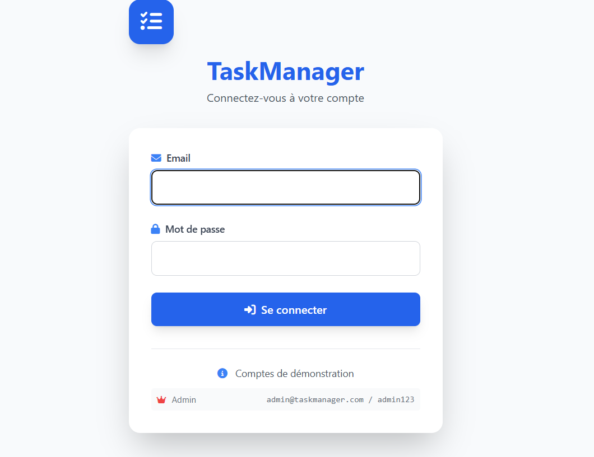

Checklist de sécurité pour protéger les endpoints, gérer les rôles et renforcer la traçabilité.

Sécuriser une API ne se limite pas à l'authentification. Il faut gérer les rôles, limiter les abus, tracer les actions et protéger les données sensibles.
Séparer clairement les permissions, appliquer le principe du moindre privilège et auditer régulièrement les endpoints exposés.